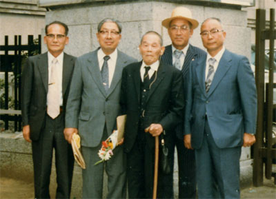

|
第７３ ウエワク捕虜作業隊（その２）
星移り、年変わり、終戦後３３年が過ぎた昭和５３年９月２３日、安達軍司令官閣下の三十三 回忌法要が東京九段会館でとり行われました。第二十師団、第四十一師団、第五十一師団、軍直轄部隊 の将兵が参集し三十三回忌が盛大に営まれました。参列した将兵は約百人で誠に盛大でした。 故人を偲ぶ思い出を各部隊で述べることになりました。ところが、松本中佐は高齢のため、「船越君、 君喋ってくれ」と言われましたので、私が第十八軍通信隊長の代理として、『猛軍司令官安達二十三閣 下の思い出』をスピーチする光栄に浴することになりました。スピーチの内容は次の二つだけでした。 １．マダンで、同盟通信の『日本内地のニユース』を真夜中に傍受し、軍司令部に報告していました。 そのニユースに大きな安というサインがあり、安達軍司令官閣下のサインである事を知り驚いたこと。 ２．ウエワク捕虜作業隊の任務を終え、ムッシュ島に帰還した時、我々を出迎えた軍司令官閣下の労いの 言葉を聞き、感激し、苦労はとんでいってしまったこと。 なお、当日、元第十八軍の軍通信隊員として参加した将兵は松本中佐、船越中尉、須貝准尉、押野曹長、 加瀬伍長の五名でした。参列者の中に吉原軍参謀長（陸軍小将）、杉山高級参謀（陸軍大佐）、田中作戦 参謀（陸軍少佐）（後、自衛隊の幕僚長）の姿があり、懐かしく思いました。が、そこには往時の姿はな かった。この３人の参謀は私の記憶に強烈な印象として今も残っています。３人とも故人となってしまわ れました。戦争も過去のものになってしい、今も尚矍鑠として生きておられる戦友の心の中には脈々とし て生きていることであろう。 写真説明 東京九段会館 昭和５４年９月９日 写真右から須貝准尉、加瀬伍長、松本中佐、押野曹長、 船越無線小隊長（筆者）  |
|||||||||||||||||||||||||||